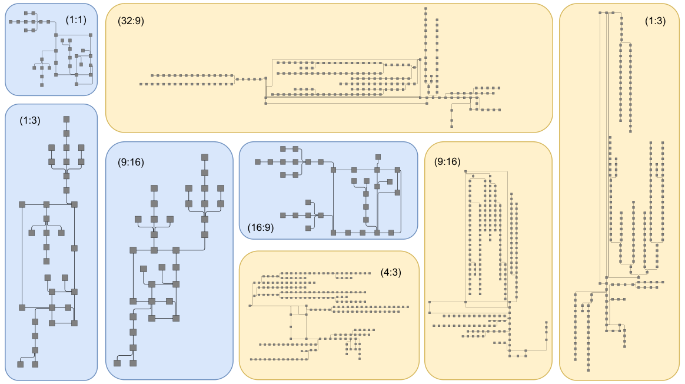

2026
PhD Candidate · Computer Science · KAUST
Zainab
Alsuwaykit
I am a PhD candidate in Computer Science at King Abdullah University of Science and Technology (KAUST). I develop methods for graph drawing and scientific visualization of complex data.

ARCOL — Aspect Ratio Constrained Orthogonal Layout01 / About me
Research at the intersection of algorithms and visual understanding.
My research investigates how complex networks and scientific structures can be represented clearly and effectively. I am especially interested in graph drawing algorithms, orthogonal layouts, aspect-ratio adaptation, optimization, and scientific visualization.
I work in the violab.science research group at KAUST, supervised by Prof. Ivan Viola.
03 / Publications
Published work
Selected peer-reviewed publications. Links open the publisher version or publicly available manuscript.

04 / Background
Education & experience
Education
Present
PhD in Computer Science
King Abdullah University of Science and Technology (KAUST), Saudi Arabia
2018
M.S. in Computer Science
Wichita State University, USA
2011
B.S. in Computer Science
University of Dammam, Saudi Arabia
Professional experience
2022–2025
Graduate Teaching Assistant
KAUST · Advanced Algorithms and Analysis
2021
DeltaV / DCS System Engineer
Emerson · Industrial control systems
2018–2020
Graduate Teaching Assistant
Wichita State University · Computer Science courses
Academic activities
2025IEEE VIS Posters Program Committee
Reviewed poster submissions.
2025Research visit · TU Wien
Collaboration on graph drawing and visualization.
2025Graph Drawing PhD School
Participant, GD’25 in Sweden.
05 / Contact
Let's connect.
I welcome conversations about graph drawing, visualization research, and potential collaborations.
zainab.alsuwaykit@kaust.edu.sa ↗